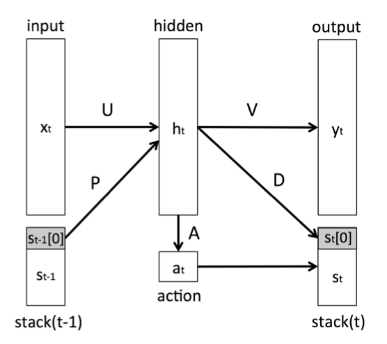

Stack RNN is Stack-Augmented RNN. 
We have shown that certain difficult pattern recognition problems can be solved by augmenting a recurrent network with structured, growing (potentially unlimited) memory. We studied very simple memory structures such as a stack and a list, but, the same approach can be used to learn how to operate more complex ones (for example a multi-dimensional tape). While currently the topology of the long term memory is fixed, we think that it should be learned from the data as well.